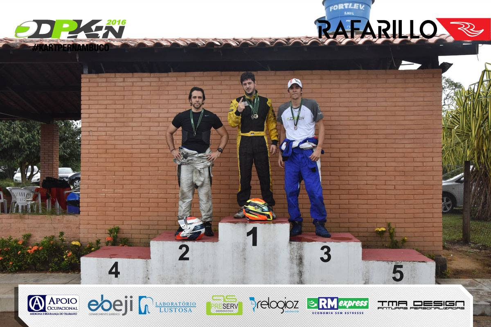
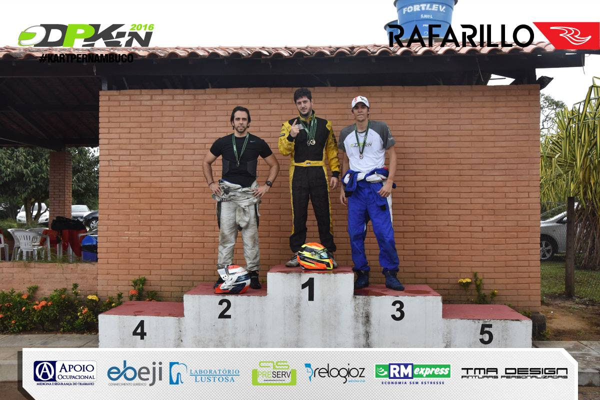

História do DPKin
Em meados de 2002, grupo de pilotos amadores e apaixonados por velocidade decidiu tornar sério uma brincadeira que acontecia mensalmente entre amigos, em alguma das pistas de kart indoor do Recife.
Decidiu-se então, para o ano de 2003, organizar um pequeno campeonato , com corridas mensais.
Neste momento Ângelo Lima, César Cabral, Filipe Calado, Jarbas Dal Lago, Thiago Aragão e Wagner Benício tomam a frente da organização e surge aí o Desafio Pernambucano de Kart Indoor (DPKin).
Ainda nesse ano, em nossa primeira temporada, chegamos a ter cerca de 20 participantes no total das 8 etapas que disputamos nos kartodrómos existentes na cidade, naquele momento.
Em 2004, quando todos os preparativos para inicio de um novo campeonato ja estavam sendo organizados, tivemos a infelicidade de receber a noticia do fechamento dos kartodromos de indoor existentes na Capital Pernambucana, impossibilitando assim a continuidade do Campeonato. Porém, ao final daquele ano, a noticia da construção do kartodrómo dos Guararapes, deixou o grupo animado e com o sentimento de que poderiamos voltar a correr juntos, com melhor estrutura e fazer um campeonato maior ainda.
Com a inaguração do novo kartódromo, no começo de 2005, os mesmos organizadores colocaram a "mão na massa" e preparamos tudo para que tivessemos novamente uma temporada do Desafio Pernambucano de Kart Indoor, agora já popularmente conhecido como DPKin.
Em nossa segunda edição, a organização foi composta por quase todos os mesmos de 2003 e ao longo do campeonato tivemos a participação de nada menos que 36 pilotos, configurando assim um crescimento de 80% no número de participantes, em relação ao campeonato anterior e atraindo até a atenção de ex-pilotos profissionais que viram no DPKin uma oportunidade de participrar de uma corrida sadia, uma diversão entre amigos e ao mesmo tempo resgatar a seriedade das disputas em pista.
A temporada de 2006, nossa 3a edição do nosso evento, contamos com o apoio do Banco BGN e do Kartodromo dos Guararapes.
O campeonato foi marcado pela luta do titulo dos dois semestres até a últimas etapas e mostrou um grande salto tecnico dos participantes, chegando a ter mais de 50 participantes em algumas etapas e mais de 70 participantes inscritos durante a temporada.
A temporada de 2007 continuamos com apoio do Banco BGN e tivemos um forte nivel no campeonato, onde ao termino da temporada revelamos alguns novos talentos que em 2008 se aventurarão no kart profissional e obtendo bons resultados.
A temporadada 2008, algumas mudanças nas regras, divisão de categorias, um crescimento no evento e entrada de novos patrocinadores, o que consolidou o campeonato como um dos mais fortes da região, prestigiado por varios pilotos amadores, profissionais e um publico grande em seus dias de corrida!
2009 a 2010 o DPKin deu uma pausa em seus campeonatos, devido ao fechamendo do Kartodromo dos Guararapes.
Em 2011 o campeonato voltou com tudo realizando corridas na pista do GKI carrefour e GKI aeroporto, a escassez dos anos de 2009 e 2010 fez com que a volta do campeonato fosse marcada pela grande quantidade de pilotos inscritos e o DPKin se viu obrigado a voltar com o campeonato por equipes, extinto desde o primeiro ano.
Mas foi em 2014 que o DPKin deu seu grande salto de qualidade e passou a ser disputado em um kartodrómo profissional, o kartodrómo Tamboril, e usar karts mais potentes de 13hp, antes as corridas eram feitas em karts 6,5hp.
Objetivo:
Sermos reconhecidos como o maior e melhor campeonato do nordeste para pilotos amadores de kart indoor.
Missão:
Fazer um evento que proporcione diversão aos participantes, com disputas limpas, espírito esportivo e novas amizades.
 
